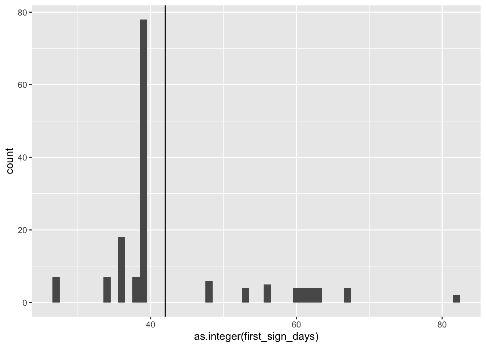
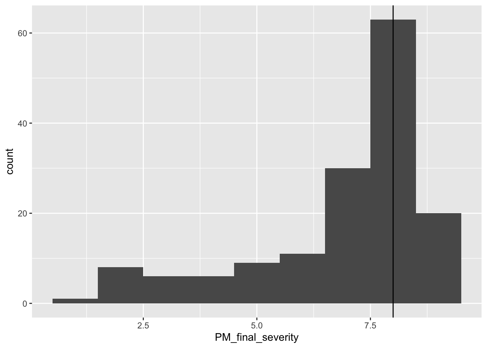
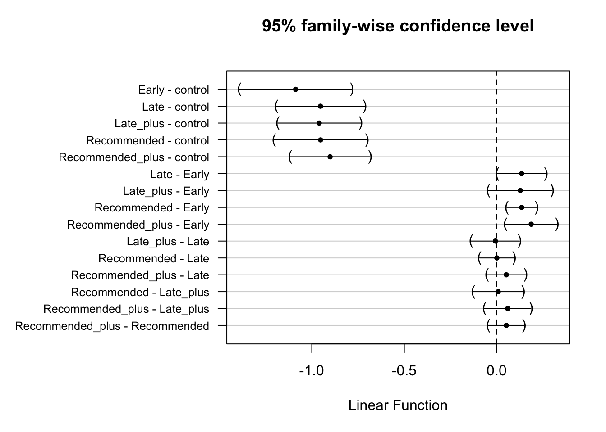
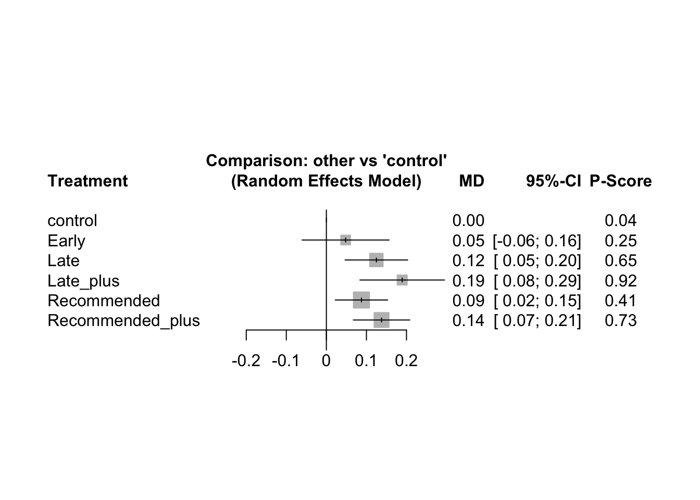
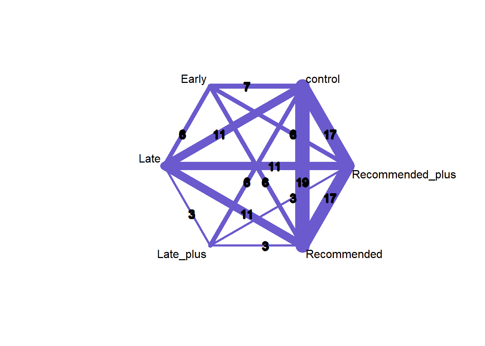
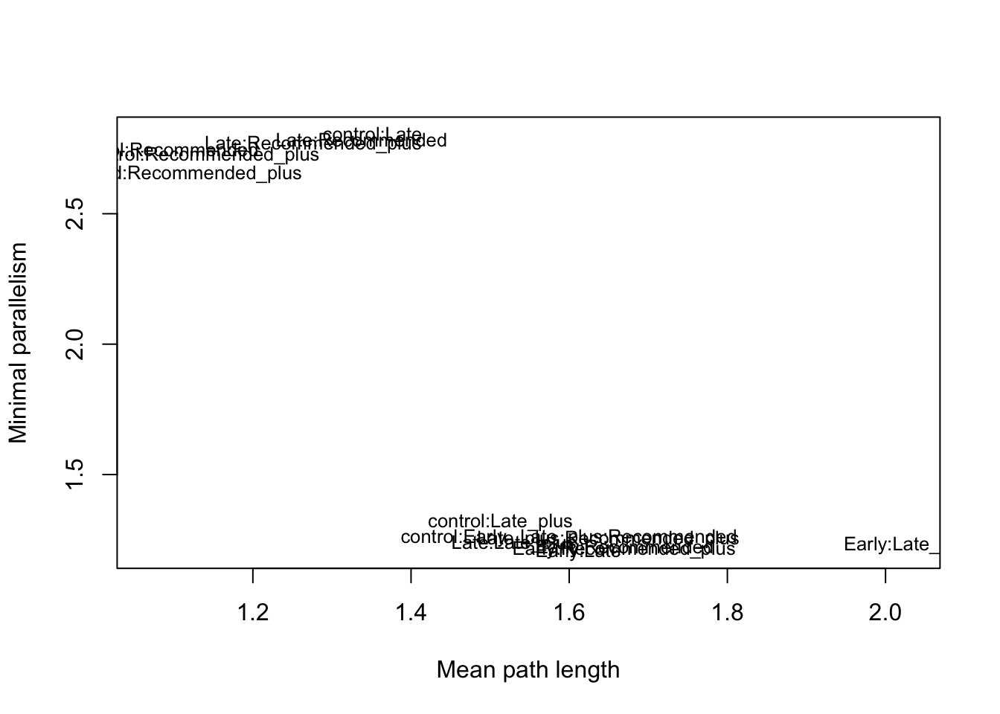

Chapter 4 Grain yield meta-analysis
Let’s get started with the analysis by first finding the best fitting model which answers our research question.
When, in relation to PM establishment in the crop, should farmers begin spraying mungbean to mitigate yield loss: before PM establishing, immediately after first sign of PM establishing, or after PM has become established in the crop.
A secondary question to this aim is: given the time at which the first spray occurred does a second spray provide worthwhile yield protection.
To do this, the model will use the main variables:
Grain yield the response variable (t / ha)
Trial, which resolves combinations of categorical random variables:
- year
- location
- row spacing
- cultivar
- year
spray_management a moderator to evaluate the difference in effect size attributed to fungicide application timing.
id random variable indicating each treatment is independent
# load R packages
if (!require("pacman"))
install.packages("pacman")
pacman::p_load(
tidyverse,
kableExtra,
bomrang,
RColorBrewer,
metafor,
here,
netmeta,
multcomp,
flextable
)
source(here("R/reportP.R"))
# Data
PM_dat_Y <-
read.csv("cache/PM_yield_clean_data.csv", stringsAsFactors = FALSE
)4.0.1 Define Trial
PM_dat_Y <-
PM_dat_Y %>%
mutate(trial = paste(trial_ref,
year,
location,
host_genotype,
row_spacing,
sep = "_"))
4.1 Spray schedule meta-analysis
The spray_management moderator will be evaluated in the first model.
Then this model will be tested against other models incorporating, time of disease onset, disease pressure and other variance-covariance matrix structures.
4.1.1 Spray schedule moderator
This grain yield meta-analysis is a multi-variate meta-analysis, using the metafor package function rma.mv() (Viechtbauer 2010).
We are using the spray_management variable as a moderator and an interactive random term with the trial random variable. The variance-covariance matrix is specified as unstructured (UN) to allow correlations between and within trials.
PM_mv <- rma.mv(
yi = grain_yield.t.ha.,
V = vi,
mods = ~ spray_management,
method = "ML",
random = list( ~ spray_management | trial, ~ 1 | id),
struct = "UN",
control = list(optimizer = "optim"),
data = PM_dat_Y
)## Warning: Some combinations of the levels of the inner factor never occurred.
## Corresponding rho value(s) fixed to 0.
4.1.2 Disease onset interaction with spray schedule
To determine if the time at which disease occurs in the cropping season influences the efficacy at which fungicide applications protect yield we will create a categorical variable defining early or late disease onset.
early and late categories should be divided by a number close to the median days after sowing when signs of the disease were first observed to ensure roughly even numbers in each category.
PM_dat_Y %>%
mutate(first_sign_days = lubridate::ymd(first_sign_disease) -
lubridate::ymd(planting_date)) %>%
pull(first_sign_days) %>%
median()## Time difference of 39 daysWe will choose 42 days as this is the average days to flowering in mungbean. In addition, Kelly et. al. (2017) noted that yield losses are higher in cultivar Berken when disease establishes before flowering.
Now let’s define a continuous variablefirst_sign_days and a categorical variable onset.
PM_dat_Y <- PM_dat_Y %>%
mutate(first_sign_days = lubridate::ymd(first_sign_disease) -
lubridate::ymd(planting_date)) %>%
mutate(onset = case_when(
first_sign_days <= 42 ~ "early_onset",
first_sign_days > 42 ~ "late_onset"
))Inspect a histogram of when first sign occurred in the crop.
PM_dat_Y %>%
ggplot(aes(x = as.integer(first_sign_days))) +
geom_histogram(binwidth = 1) +
geom_vline(xintercept = 42)
early_onset contains 117 treatments and,
late_onset contains 37 treatments.
4.1.2.1 metafor onset analysis
We are adding the onset variable as a moderator to test and interaction with the spray_management variable as a moderator and an interactive term to the trial random variable.
PM_mv_onset <- rma.mv(
yi = grain_yield.t.ha.,
V = vi,
mods = ~ spray_management * onset,
method = "ML",
random = list( ~ spray_management | trial, ~ 1 | id),
struct = "UN",
control = list(optimizer = "optim"),
data = PM_dat_Y
)## Warning: Some combinations of the levels of the inner factor never occurred.
## Corresponding rho value(s) fixed to 0.anova(PM_mv, PM_mv_onset)##
## df AIC BIC AICc logLik LRT pval QE
## Full 33 -38.5465 61.6730 -19.8465 52.2732 7982.9638
## Reduced 27 -43.9598 38.0379 -31.9598 48.9799 6.5867 0.3608 9993.0956This comparison tells us the meta-analysis including onset explained more residual heterogeneity, as shown by the lower QE value, and has a better fit, indicated by the higher log-likelihood with the additional onset parameters.
However the higher AIC indicates in the model with the additional onset parameters does not sufficiently improve the model fit to warrant including these parameters and therefore the ‘reduced’ model is a better option.
This inference is also reflected by the the chi-squared test, which is uncertain that the onset model is significantly better as indicated by the ANOVA pval 0.361.
4.1.3 Disease pressure interaction with spray schedule
To determine if the seasonal disease pressure influences the efficacy at which fungicide applications protect yield a categorical variable defining high_pressure or low_pressure can be defined.
high_pressure and low_pressure will be divided by the median disease severity in the no spray control treatments at the end of the season.
PM_dat_Y %>%
filter(fungicide_ai == "control") %>%
pull(PM_final_severity) %>%
median()## [1] 8Now to define these two new variables, low_pressure and high_pressure in the data.
PM_dat_Y <- PM_dat_Y %>%
mutate(
d_pressure = case_when(
PM_final_severity < 8 ~ "low_pressure",
PM_final_severity >= 8 ~ "high_pressure"
)
)Inspect a histogram of the final severity values in the crop.
PM_dat_Y %>%
ggplot(aes(x = PM_final_severity)) +
geom_histogram(binwidth = 1) +
geom_vline(xintercept = 8)
4.1.3.1 metafor disease pressure interaction
Test d_pressure variable addition as a moderator to evaluate it’s interaction with the spray_management to influence the grain yield effect size.
PM_mv_dp <- rma.mv(
yi = grain_yield.t.ha.,
V = vi,
mods = ~ spray_management * d_pressure,
method = "ML",
random = list( ~ spray_management | trial, ~ 1 | id),
struct = "UN",
control = list(optimizer = "optim"),
data = PM_dat_Y
)## Warning in rma.mv(yi = grain_yield.t.ha., V = vi, mods = ~spray_management * :
## Redundant predictors dropped from the model.## Warning: Some combinations of the levels of the inner factor never occurred.
## Corresponding rho value(s) fixed to 0.anova(PM_mv, PM_mv_dp)##
## df AIC BIC AICc logLik LRT pval QE
## Full 32 -45.1999 51.9826 -27.7454 54.6000 7550.9672
## Reduced 27 -43.9598 38.0379 -31.9598 48.9799 11.2401 0.0468 9993.0956This comparison tells us the meta-analysis including d_pressure explained more residual heterogeneity, as shown by the lower QE value, and has a better fit, indicated by the higher log-likelihood with the additional d_pressure parameter.
However the lower AIC in the ‘Full’ model indicates that retaining the model including the additional d_pressure variables could be a reasonable decision.
In addition the chi-squared test indicates that the d_pressure model is better as indicated by the pval 0.0468.
However it is worth noting that there were no Late plus schedules that experienced low disease pressure. Even though the disease pressure interaction on the moderators could be deemed significant (P = 0.0468), the division of schedules due to disease pressure (reducing k) makes drawing conclusions risky. More data is needed to explore this possible effect.
# show the division of spray schedules by the d_pressure moderator
PM_dat_Y %>%
group_by(spray_management, d_pressure) %>%
summarise(n()) %>%
flextable()## `summarise()` has grouped output by 'spray_management'. You can override using the `.groups` argument.spray_management | d_pressure | n() |
control | high_pressure | 29 |
control | low_pressure | 9 |
Early | high_pressure | 10 |
Early | low_pressure | 3 |
Late | high_pressure | 7 |
Late | low_pressure | 10 |
Late_plus | low_pressure | 19 |
Recommended | high_pressure | 13 |
Recommended | low_pressure | 14 |
Recommended_plus | high_pressure | 10 |
Recommended_plus | low_pressure | 30 |
summary(PM_mv_dp)##
## Multivariate Meta-Analysis Model (k = 154; method: ML)
##
## logLik Deviance AIC BIC AICc
## 54.6000 215.2690 -45.1999 51.9826 -27.7454
##
## Variance Components:
##
## estim sqrt nlvls fixed factor
## sigma^2 0.0000 0.0000 154 no id
##
## outer factor: trial (nlvls = 23)
## inner factor: spray_management (nlvls = 6)
##
## estim sqrt k.lvl fixed level
## tau^2.1 0.2063 0.4542 38 no control
## tau^2.2 0.2528 0.5028 13 no Early
## tau^2.3 0.3116 0.5582 17 no Late
## tau^2.4 0.3578 0.5981 19 no Late_plus
## tau^2.5 0.2989 0.5467 27 no Recommended
## tau^2.6 0.3586 0.5989 40 no Recommended_plus
##
## rho.cntr rho.Erly rho.Late rho.Lt_p rho.Rcmm rho.Rcm_
## control 1 0.9908 0.9992 0.9987 0.9953 0.9972
## Early 0.9908 1 0.9953 0.0000 0.9993 0.9981
## Late 0.9992 0.9953 1 0.9999 0.9983 0.9994
## Late_plus 0.9987 0.0000 0.9999 1 0.9990 0.9997
## Recommended 0.9953 0.9993 0.9983 0.9990 1 0.9997
## Recommended_plus 0.9972 0.9981 0.9994 0.9997 0.9997 1
## cntr Erly Late Lt_p Rcmm Rcm_
## control - no no no no no
## Early 7 - no yes no no
## Late 11 6 - no no no
## Late_plus 6 0 3 - no no
## Recommended 19 6 11 3 - no
## Recommended_plus 17 6 11 3 17 -
##
## Test for Residual Heterogeneity:
## QE(df = 143) = 7550.9672, p-val < .0001
##
## Test of Moderators (coefficients 2:11):
## QM(df = 10) = 69.6611, p-val < .0001
##
## Model Results:
##
## estimate se
## intrcpt 1.0965 0.0973
## spray_managementEarly 0.0694 0.0424
## spray_managementLate 0.2519 0.0661
## spray_managementLate_plus 0.1017 0.0551
## spray_managementRecommended 0.1994 0.0355
## spray_managementRecommended_plus 0.4024 0.0709
## d_pressurelow_pressure 0.0091 0.0406
## spray_managementEarly:d_pressurelow_pressure 0.0053 0.0966
## spray_managementLate:d_pressurelow_pressure -0.1641 0.0766
## spray_managementRecommended:d_pressurelow_pressure -0.1267 0.0542
## spray_managementRecommended_plus:d_pressurelow_pressure -0.2739 0.0739
## zval pval
## intrcpt 11.2687 <.0001
## spray_managementEarly 1.6368 0.1017
## spray_managementLate 3.8101 0.0001
## spray_managementLate_plus 1.8439 0.0652
## spray_managementRecommended 5.6114 <.0001
## spray_managementRecommended_plus 5.6739 <.0001
## d_pressurelow_pressure 0.2234 0.8232
## spray_managementEarly:d_pressurelow_pressure 0.0549 0.9562
## spray_managementLate:d_pressurelow_pressure -2.1409 0.0323
## spray_managementRecommended:d_pressurelow_pressure -2.3367 0.0195
## spray_managementRecommended_plus:d_pressurelow_pressure -3.7075 0.0002
## ci.lb ci.ub
## intrcpt 0.9058 1.2872 ***
## spray_managementEarly -0.0137 0.1524
## spray_managementLate 0.1223 0.3815 ***
## spray_managementLate_plus -0.0064 0.2098 .
## spray_managementRecommended 0.1297 0.2690 ***
## spray_managementRecommended_plus 0.2634 0.5414 ***
## d_pressurelow_pressure -0.0705 0.0887
## spray_managementEarly:d_pressurelow_pressure -0.1841 0.1947
## spray_managementLate:d_pressurelow_pressure -0.3143 -0.0139 *
## spray_managementRecommended:d_pressurelow_pressure -0.2330 -0.0204 *
## spray_managementRecommended_plus:d_pressurelow_pressure -0.4187 -0.1291 ***
##
## ---
## Signif. codes: 0 '***' 0.001 '**' 0.01 '*' 0.05 '.' 0.1 ' ' 1
4.1.4 Test variance-covavriance matrix structure
Test a model with an implied simpler variance-covariance matrix, “compound symmetry” (CS), to examine if unstructured matrix is suitable.
PM_mv_cs <- rma.mv(
yi = grain_yield.t.ha.,
V = vi,
mods = ~ spray_management,
method = "ML",
random = list( ~ spray_management | trial, ~ 1 | id),
struct = "CS",
control = list(optimizer = "optim"),
data = PM_dat_Y
)
anova(PM_mv, PM_mv_cs)##
## df AIC BIC AICc logLik LRT pval QE
## Full 27 -43.9598 38.0379 -31.9598 48.9799 9993.0956
## Reduced 9 -38.8791 -11.5465 -37.6291 28.4395 41.0807 0.0015 9993.0956Again PM_mv (Full) prevails as the better model (p = 0.0014; AIC = -45.4359) and therefore we should keep the unstructured variance-covariance matrix.
Therefore the model
PM_mv, is the preffered model with this data.
4.2 Summarise PM_mv model
summary(PM_mv)##
## Multivariate Meta-Analysis Model (k = 154; method: ML)
##
## logLik Deviance AIC BIC AICc
## 48.9799 226.5092 -43.9598 38.0379 -31.9598
##
## Variance Components:
##
## estim sqrt nlvls fixed factor
## sigma^2 0.0000 0.0005 154 no id
##
## outer factor: trial (nlvls = 23)
## inner factor: spray_management (nlvls = 6)
##
## estim sqrt k.lvl fixed level
## tau^2.1 0.2070 0.4549 38 no control
## tau^2.2 0.2203 0.4694 13 no Early
## tau^2.3 0.3288 0.5734 17 no Late
## tau^2.4 0.4023 0.6342 19 no Late_plus
## tau^2.5 0.2863 0.5351 27 no Recommended
## tau^2.6 0.4053 0.6366 40 no Recommended_plus
##
## rho.cntr rho.Erly rho.Late rho.Lt_p rho.Rcmm rho.Rcm_
## control 1 0.9738 0.9925 0.9893 0.9886 0.9834
## Early 0.9738 1 0.9918 0.0000 0.9969 0.9945
## Late 0.9925 0.9918 1 0.9997 0.9981 0.9982
## Late_plus 0.9893 0.0000 0.9997 1 0.9986 0.9993
## Recommended 0.9886 0.9969 0.9981 0.9986 1 0.9969
## Recommended_plus 0.9834 0.9945 0.9982 0.9993 0.9969 1
## cntr Erly Late Lt_p Rcmm Rcm_
## control - no no no no no
## Early 7 - no yes no no
## Late 11 6 - no no no
## Late_plus 6 0 3 - no no
## Recommended 19 6 11 3 - no
## Recommended_plus 17 6 11 3 17 -
##
## Test for Residual Heterogeneity:
## QE(df = 148) = 9993.0956, p-val < .0001
##
## Test of Moderators (coefficients 2:6):
## QM(df = 5) = 37.3595, p-val < .0001
##
## Model Results:
##
## estimate se zval pval ci.lb
## intrcpt 1.0903 0.0969 11.2569 <.0001 0.9004
## spray_managementEarly 0.0029 0.0439 0.0672 0.9464 -0.0830
## spray_managementLate 0.1374 0.0440 3.1226 0.0018 0.0512
## spray_managementLate_plus 0.1301 0.0578 2.2507 0.0244 0.0168
## spray_managementRecommended 0.1378 0.0339 4.0606 <.0001 0.0713
## spray_managementRecommended_plus 0.1891 0.0530 3.5692 0.0004 0.0853
## ci.ub
## intrcpt 1.2801 ***
## spray_managementEarly 0.0889
## spray_managementLate 0.2237 **
## spray_managementLate_plus 0.2433 *
## spray_managementRecommended 0.2043 ***
## spray_managementRecommended_plus 0.2930 ***
##
## ---
## Signif. codes: 0 '***' 0.001 '**' 0.01 '*' 0.05 '.' 0.1 ' ' 1The first table in the PM_mv output shows the tau^2 (between trial variance) for each random effect intercept (spray_management) to trial and the number of occurrences for each treatment in the analysis.
This effectively shows the heterogeneity between trials for these particular treatments.
This table shows Recommended_plus showed the highest heterogeneity between trials followed by Late_plus, Late then Recommended, with Early and the no-spray control showing the least heterogeneity.
The second table is in two parts (left and right).
The left part, rho, is the correlation of variation between the specified treatments.
All comparisons were acceptable except for a comparison between Early and Late_plus, indicating 0.000 rho.
Early and Late_plus treatments never occurred within the same trial, which is indicated by the right side of the table (hence earlier warnings).
This is not a concern for this type of network meta-analysis because the differences between these treatments can be inferred by their differences with other treatments (Madden, Piepho, and Paul 2016).
In this result we can see that the Early treatment is not significantly different to the intercept, which in this case is the mean of the no spray control.
However the other treatments are significantly different from the no-spray control (intercept).
The \(Q_M\) omnibus test of moderators, shows the moderators significantly influence the model (\(Q_M =\) 37.3595017 \(,df =\) 5, P < 0.0001) and we can reject the null hypothesis (\(H_0 : \beta_1 = \beta_2 = \beta_3 =\beta_4 = 0\)) that there is no difference between the moderators (Viechtbauer 2010).
The analysis shows there is still a significant amount of residual heterogeneity (\(Q_E =\) 9993.095615 \(,df=\) 149, P < 0.0001 ) not captured by the spray management moderator indicating other possible moderators which might influence grain yield.
4.3 Meta-analysis results summary
4.3.1 Moderator estimates table
Let’s present the meta-analysis results for the moderator variables in a table of estimates.
# obtain number of treatments included in each moderator variable
k5 <-
as.data.frame(table(PM_dat_Y$trial, PM_dat_Y$spray_management)) %>%
filter(Freq != 0) %>%
group_by(Var2) %>%
summarise(n()) %>%
pull()
# create data.frame
results_mv <- data.frame(
Moderator = c(
"Intercept / No Spray control",
"Early",
"Late",
"Late+",
"Recommended",
"Recommended+"
),
N = PM_mv$g.levels.k,
k = k5,
Effect = round(PM_mv$b, 4),
se = round(PM_mv$se, 4),
CI_lower = round(PM_mv$ci.lb, 4),
CI_upper = round(PM_mv$ci.ub, 4),
z_val = round(PM_mv$zval, 4),
p_val = reportP(PM_mv$pval, AsNumeric = FALSE, P_prefix = FALSE)
)
# rename colnames to give table headings
colnames(results_mv)[c(2:5, 7:10)] <-
c("Treatment",
"N",
"k",
"mu",
"CI_{L}",
"CI_{U}",
"Z",
"P")
yield_estimates_table <-
flextable(results_mv[c(2, 5, 6, 3, 4), c(1, 3:8, 10)]) %>%
align(j = 3:8, align = "center", part = "all") %>%
fontsize(size = 8, part = "body") %>%
fontsize(size = 10, part = "header") %>%
italic(italic = TRUE, part = "header") %>%
set_caption(
"Table 2: Estimated mungbean yield mean difference to the no spray control (intercept) for each spray schedule treatment. Yield estimates (u) were calculated from a network meta-analysis of data obtained from grey literature reports of 'k' field trials undertaken in Eastern Australia. P values indicate statistical significance in comparison to the intercept."
) %>%
autofit() %>%
footnote(
i = 1,
j = c(2:4, 6:8),
value = as_paragraph(
c(
"number of treatment means categorised to each spray schedule",
"number of trials with the respective spray schedule",
"estimated mean yield determined by the meta-analysis",
"Lower range of the 95% confidence interval",
"Upper range of the 95% confidence interval",
"indicates the significance between each respective spray schedule and the no spray control (intercept)"
)
),
ref_symbols = letters[1:6],
part = "header",
inline = TRUE
)
yield_estimates_tableModerator | Na | kb | muc | se | CI_{L}d | CI_{U}e | Pf |
Early | 13 | 7 | 0.0029 | 0.0439 | -0.0830 | 0.0889 | 0.9464 |
Recommended | 27 | 19 | 0.1378 | 0.0339 | 0.0713 | 0.2043 | < 0.0001 |
Recommended+ | 40 | 17 | 0.1891 | 0.0530 | 0.0853 | 0.2930 | 0.0004 |
Late | 17 | 11 | 0.1374 | 0.0440 | 0.0512 | 0.2237 | 0.0018 |
Late+ | 19 | 6 | 0.1301 | 0.0578 | 0.0168 | 0.2433 | 0.0244 |
anumber of treatment means categorised to each spray schedule; bnumber of trials with the respective spray schedule; cestimated mean yield determined by the meta-analysis; dLower range of the 95% confidence interval; eUpper range of the 95% confidence interval; findicates the significance between each respective spray schedule and the no spray control (intercept) | |||||||
4.3.2 Moderator estimates plot
View the moderator comparisons in a plot.
results_mv %>%
filter(Treatment != "control") %>%
mutate(Treatment = factor(Treatment, levels = rev(
c(
"Early",
"Recommended",
"Recommended_plus",
"Late",
"Late_plus"
)
))) %>%
ggplot(aes(Treatment, mu)) +
geom_hline(
yintercept = seq(-0.05, 0.3, by = 0.05),
linetype = 3
) +
geom_point(aes(size = 1 / se), shape = 15) +
geom_linerange(aes(ymin = `CI_{L}`, ymax = `CI_{U}`)) +
coord_flip() +
labs(caption = "Bars indicate 95% confidence intervals")+
ylab(expression(paste(
"Mean yield difference to control (t ha" ^ -1, ")", sep = ""
))) +
scale_x_discrete(
"Moderator variable",
labels = c(
expression("Late"["plus"]),
expression("Late"["single"]),
expression("Recommended"["plus"]),
expression("Recommended"["single"]),
expression("Early"["single"])
)
)ggsave("paper/figures/Fig2_means_difference.png",
height = 3,
dpi = 500)## Saving 7 x 3 in image
4.3.3 Moderator contrasts
Calculate treatment contrasts
source("R/simple_summary.R") #function to provide a table that includes the treatment names in the contrasts
summary(glht(PM_mv, linfct = cbind(contrMat(rep(
1, 6
), type = "Tukey"))), test = adjusted("none"))##
## Simultaneous Tests for General Linear Hypotheses
##
## Fit: rma.mv(yi = grain_yield.t.ha., V = vi, mods = ~spray_management,
## random = list(~spray_management | trial, ~1 | id), struct = "UN",
## data = PM_dat_Y, method = "ML", control = list(optimizer = "optim"))
##
## Linear Hypotheses:
## Estimate Std. Error z value Pr(>|z|)
## 2 - 1 == 0 -1.0873327 0.1099858 -9.886 < 2e-16 ***
## 3 - 1 == 0 -0.9528742 0.0865069 -11.015 < 2e-16 ***
## 4 - 1 == 0 -0.9602137 0.0812167 -11.823 < 2e-16 ***
## 5 - 1 == 0 -0.9524872 0.0907279 -10.498 < 2e-16 ***
## 6 - 1 == 0 -0.9011339 0.0781280 -11.534 < 2e-16 ***
## 3 - 2 == 0 0.1344585 0.0473917 2.837 0.004552 **
## 4 - 2 == 0 0.1271189 0.0623833 2.038 0.041579 *
## 5 - 2 == 0 0.1348455 0.0292425 4.611 4e-06 ***
## 6 - 2 == 0 0.1861988 0.0504372 3.692 0.000223 ***
## 4 - 3 == 0 -0.0073395 0.0473195 -0.155 0.876738
## 5 - 3 == 0 0.0003871 0.0338151 0.011 0.990867
## 6 - 3 == 0 0.0517403 0.0377384 1.371 0.170367
## 5 - 4 == 0 0.0077266 0.0488628 0.158 0.874355
## 6 - 4 == 0 0.0590798 0.0454538 1.300 0.193677
## 6 - 5 == 0 0.0513532 0.0349093 1.471 0.141278
## ---
## Signif. codes: 0 '***' 0.001 '**' 0.01 '*' 0.05 '.' 0.1 ' ' 1
## (Adjusted p values reported -- none method)contrast_Ssum <-
simple_summary(summary(glht(PM_mv, linfct = cbind(
contrMat(rep(1, 6), type = "Tukey")
)), test = adjusted("none")))
contrast_Ssum %>%
flextable()%>%
autofit()contrast | coefficients | StdErr | Zvalue | pvals | sig |
Early - control | -1.0873 | 0.1100 | -9.8861 | < 0.0001 | *** |
Late - control | -0.9529 | 0.0865 | -11.0150 | < 0.0001 | *** |
Late_plus - control | -0.9602 | 0.0812 | -11.8229 | < 0.0001 | *** |
Recommended - control | -0.9525 | 0.0907 | -10.4983 | < 0.0001 | *** |
Recommended_plus - control | -0.9011 | 0.0781 | -11.5341 | < 0.0001 | *** |
Late - Early | 0.1345 | 0.0474 | 2.8372 | 0.0046 | ** |
Late_plus - Early | 0.1271 | 0.0624 | 2.0377 | 0.0416 | * |
Recommended - Early | 0.1348 | 0.0292 | 4.6113 | < 0.0001 | *** |
Recommended_plus - Early | 0.1862 | 0.0504 | 3.6917 | 0.0002 | *** |
Late_plus - Late | -0.0073 | 0.0473 | -0.1551 | 0.8767 | |
Recommended - Late | 0.0004 | 0.0338 | 0.0114 | 0.9909 | |
Recommended_plus - Late | 0.0517 | 0.0377 | 1.3710 | 0.1704 | |
Recommended - Late_plus | 0.0077 | 0.0489 | 0.1581 | 0.8744 | |
Recommended_plus - Late_plus | 0.0591 | 0.0455 | 1.2998 | 0.1937 | |
Recommended_plus - Recommended | 0.0514 | 0.0349 | 1.4710 | 0.1413 |
These contrasts can be viewed in a plot.
par(mar = c(5, 13, 4, 2) + 0.1)
plot(glht(PM_mv, linfct = cbind(contrMat(rep(
1, 6
), type = "Tukey"))), yaxt = 'n')
axis(
2,
at = seq_along(contrast_Ssum$contrast),
labels = rev(contrast_Ssum$contrast),
las = 2,
cex.axis = 0.8
)
4.3.4 Profile plots
An inspection of the profile plots to ensure the model is not over-fitted can be undertaken. We expect to see the estimate align with the peak of the curve. Also that the shape of the line is a curve. As these plots take a long time to generate they will not be evaluated.
profile(PM_mv, tau2 = 1)
profile(PM_mv, tau2 = 2)
profile(PM_mv, tau2 = 3)
profile(PM_mv, tau2 = 4)
profile(PM_mv, tau2 = 5)
profile(PM_mv, tau2 = 6)
4.4 netmeta analysis
The netmeta package can provide a graphical representation of the pairwise comparisons.
The netmeta package uses a frequentist approach focusing on the pairwise comparisons between treatments.
These results can be used to evaluate if our outcome with the metafor package was robust.
datPM3 <- PM_dat_Y %>%
group_by(trial, spray_management, replicates) %>%
summarize(yi_mean = mean(grain_yield.t.ha.),
vi_mean = mean(vi)) %>%
ungroup()## `summarise()` has grouped output by 'trial', 'spray_management'. You can override using the `.groups` argument.PM_con <- pairwise(
treat = spray_management,
n = replicates,
mean = yi_mean,
sd = sqrt(vi_mean),
studlab = trial,
data = datPM3,
sm = "MD"
)
net_con <- netmeta(TE,
seTE,
treat1,
treat2,
studlab,
data = PM_con,
sm = "MD")
summary(net_con)## Number of studies: k = 23
## Number of treatments: n = 6
## Number of pairwise comparisons: m = 126
## Number of designs: d = 7
##
## Fixed effects model
##
## Treatment estimate (sm = 'MD'):
## control Early Late Late_plus Recommended Recommended_plus
## control . -0.0422 -0.0630 -0.1609 -0.0574 -0.1039
## Early 0.0422 . -0.0208 -0.1187 -0.0152 -0.0618
## Late 0.0630 0.0208 . -0.0980 0.0055 -0.0410
## Late_plus 0.1609 0.1187 0.0980 . 0.1035 0.0570
## Recommended 0.0574 0.0152 -0.0055 -0.1035 . -0.0465
## Recommended_plus 0.1039 0.0618 0.0410 -0.0570 0.0465 .
##
## Lower 95%-confidence limit:
## control Early Late Late_plus Recommended Recommended_plus
## control . -0.1207 -0.0999 -0.2160 -0.0937 -0.1466
## Early -0.0363 . -0.1017 -0.2107 -0.0967 -0.1454
## Late 0.0260 -0.0601 . -0.1513 -0.0293 -0.0814
## Late_plus 0.1058 0.0267 0.0447 . 0.0476 0.0016
## Recommended 0.0212 -0.0662 -0.0404 -0.1594 . -0.0884
## Recommended_plus 0.0613 -0.0219 0.0005 -0.1123 0.0046 .
##
## Upper 95%-confidence limit:
## control Early Late Late_plus Recommended Recommended_plus
## control . 0.0363 -0.0260 -0.1058 -0.0212 -0.0613
## Early 0.1207 . 0.0601 -0.0267 0.0662 0.0219
## Late 0.0999 0.1017 . -0.0447 0.0404 -0.0005
## Late_plus 0.2160 0.2107 0.1513 . 0.1594 0.1123
## Recommended 0.0937 0.0967 0.0293 -0.0476 . -0.0046
## Recommended_plus 0.1466 0.1454 0.0814 -0.0016 0.0884 .
##
## Random effects model
##
## Treatment estimate (sm = 'MD'):
## control Early Late Late_plus Recommended Recommended_plus
## control . -0.0481 -0.1249 -0.1893 -0.0876 -0.1378
## Early 0.0481 . -0.0768 -0.1412 -0.0395 -0.0897
## Late 0.1249 0.0768 . -0.0644 0.0373 -0.0129
## Late_plus 0.1893 0.1412 0.0644 . 0.1017 0.0515
## Recommended 0.0876 0.0395 -0.0373 -0.1017 . -0.0502
## Recommended_plus 0.1378 0.0897 0.0129 -0.0515 0.0502 .
##
## Lower 95%-confidence limit:
## control Early Late Late_plus Recommended Recommended_plus
## control . -0.1567 -0.2030 -0.2949 -0.1529 -0.2083
## Early -0.0606 . -0.1945 -0.2852 -0.1536 -0.2054
## Late 0.0467 -0.0409 . -0.1766 -0.0434 -0.0953
## Late_plus 0.0837 -0.0028 -0.0477 . -0.0086 -0.0600
## Recommended 0.0222 -0.0746 -0.1179 -0.2120 . -0.1225
## Recommended_plus 0.0672 -0.0260 -0.0696 -0.1631 -0.0221 .
##
## Upper 95%-confidence limit:
## control Early Late Late_plus Recommended Recommended_plus
## control . 0.0606 -0.0467 -0.0837 -0.0222 -0.0672
## Early 0.1567 . 0.0409 0.0028 0.0746 0.0260
## Late 0.2030 0.1945 . 0.0477 0.1179 0.0696
## Late_plus 0.2949 0.2852 0.1766 . 0.2120 0.1631
## Recommended 0.1529 0.1536 0.0434 0.0086 . 0.0221
## Recommended_plus 0.2083 0.2054 0.0953 0.0600 0.1225 .
##
## Quantifying heterogeneity / inconsistency:
## tau^2 = 0.0099; tau = 0.0995; I^2 = 55.2% [39.4%; 66.8%]
##
## Tests of heterogeneity (within designs) and inconsistency (between designs):
## Q d.f. p-value
## Total 122.66 55 < 0.0001
## Within designs 70.51 44 0.0068
## Between designs 52.15 11 < 0.0001
4.4.1 netmeta estimates plot
Visualise netmeta results as a forest plot.
forest(
net_con,
reference.group = 1,
rightcols = c("effect", "ci", "Pscore"),
rightlabs = "P-Score",
small.values = "bad"
)
4.4.2 Moderator netgraph
The netmeta analysis suggests the spray schedule commencing early are no different to any other treatment including the no spray control.
It estimates the mean is very similar to the recommended treatments.
The Recommended_plus and Late_plus treatments show higher mean estimates, however are not significantly different from the Early estimate.
netgraph(
net_con,
plastic = FALSE,
thickness = "number.of.studies",
points = FALSE,
cex.points = 1,
number.of.studies = TRUE,
cex.number.of.studies = 1,
col.number.of.studies = "black",
multiarm = FALSE,
pos.number.of.studies = 0.4
)
netleague(net_con)## League table (fixed effects model):
##
## control -0.1047 [-0.1936; -0.0157]
## -0.0422 [-0.1207; 0.0363] Early
## -0.0630 [-0.0999; -0.0260] -0.0208 [-0.1017; 0.0601]
## -0.1609 [-0.2160; -0.1058] -0.1187 [-0.2107; -0.0267]
## -0.0574 [-0.0937; -0.0212] -0.0152 [-0.0967; 0.0662]
## -0.1039 [-0.1466; -0.0613] -0.0618 [-0.1454; 0.0219]
##
## -0.0674 [-0.1122; -0.0226] -0.2666 [-0.3469; -0.1862]
## -0.1503 [-0.2707; -0.0299] .
## Late -0.0684 [-0.1392; 0.0024]
## -0.0980 [-0.1513; -0.0447] Late_plus
## 0.0055 [-0.0293; 0.0404] 0.1035 [ 0.0476; 0.1594]
## -0.0410 [-0.0814; -0.0005] 0.0570 [ 0.0016; 0.1123]
##
## -0.0486 [-0.0860; -0.0111] -0.0989 [-0.1442; -0.0536]
## -0.0778 [-0.2109; 0.0554] -0.1506 [-0.2839; -0.0172]
## 0.0041 [-0.0350; 0.0432] -0.0473 [-0.0944; -0.0002]
## 0.1602 [ 0.0643; 0.2561] -0.0018 [-0.0742; 0.0706]
## Recommended -0.0359 [-0.0797; 0.0079]
## -0.0465 [-0.0884; -0.0046] Recommended_plus
##
## League table (random effects model):
##
## control -0.0874 [-0.2110; 0.0362]
## -0.0481 [-0.1567; 0.0606] Early
## -0.1249 [-0.2030; -0.0467] -0.0768 [-0.1945; 0.0409]
## -0.1893 [-0.2949; -0.0837] -0.1412 [-0.2852; 0.0028]
## -0.0876 [-0.1529; -0.0222] -0.0395 [-0.1536; 0.0746]
## -0.1378 [-0.2083; -0.0672] -0.0897 [-0.2054; 0.0260]
##
## -0.1317 [-0.2195; -0.0440] -0.2440 [-0.3702; -0.1179]
## -0.1225 [-0.2733; 0.0283] .
## Late -0.0459 [-0.1834; 0.0917]
## -0.0644 [-0.1766; 0.0477] Late_plus
## 0.0373 [-0.0434; 0.1179] 0.1017 [-0.0086; 0.2120]
## -0.0129 [-0.0953; 0.0696] 0.0515 [-0.0600; 0.1631]
##
## -0.0863 [-0.1532; -0.0195] -0.1314 [-0.2047; -0.0581]
## -0.0841 [-0.2420; 0.0738] -0.1605 [-0.3177; -0.0034]
## 0.0366 [-0.0533; 0.1265] -0.0506 [-0.1411; 0.0400]
## 0.1468 [-0.0061; 0.2997] 0.0043 [-0.1471; 0.1557]
## Recommended -0.0496 [-0.1233; 0.0241]
## -0.0502 [-0.1225; 0.0221] Recommended_plusdecomp.design(net_con)## Q statistics to assess homogeneity / consistency
##
## Q df p-value
## Total 122.66 55 < 0.0001
## Within designs 70.51 44 0.0068
## Between designs 52.15 11 < 0.0001
##
## Design-specific decomposition of within-designs Q statistic
##
## Design Q df p-value
## control:Late_plus 0.70 2 0.7036
## control:Recommended 0.10 1 0.7469
## control:Early:Late:Recommended:Recommended_plus 28.07 20 0.1077
## control:Late:Late_plus:Recommended:Recommended_plus 18.73 8 0.0164
## control:Late:Recommended:Recommended_plus 0.66 3 0.8830
## control:Recommended:Recommended_plus 22.25 10 0.0139
##
## Between-designs Q statistic after detaching of single designs
##
## Detached design Q df p-value
## control:Early 47.35 10 < 0.0001
## control:Late_plus 51.33 10 < 0.0001
## control:Recommended 50.79 10 < 0.0001
## control:Early:Late:Recommended:Recommended_plus 38.25 7 < 0.0001
## control:Late:Late_plus:Recommended:Recommended_plus 23.35 7 0.0015
## control:Late:Recommended:Recommended_plus 33.30 8 < 0.0001
## control:Recommended:Recommended_plus 45.22 9 < 0.0001
##
## Q statistic to assess consistency under the assumption of
## a full design-by-treatment interaction random effects model
##
## Q df p-value tau.within tau2.within
## Between designs 18.09 11 0.0795 0.0799 0.0064netsplit(net_con)## Separate indirect from direct evidence (SIDE) using back-calculation method
##
## Fixed effects model:
##
## comparison k prop nma direct indir. Diff z p-value
## control:Early 7 0.78 -0.0422 -0.1047 0.1783 -0.2830 -2.93 0.0034
## control:Late 11 0.68 -0.0630 -0.0674 -0.0536 -0.0138 -0.34 0.7329
## control:Late_plus 6 0.47 -0.1609 -0.2666 -0.0672 -0.1993 -3.54 0.0004
## control:Recommended 19 0.94 -0.0574 -0.0486 -0.1936 0.1451 1.88 0.0604
## control:Recommended_plus 17 0.89 -0.1039 -0.0989 -0.1432 0.0443 0.64 0.5198
## Early:Late 6 0.45 -0.0208 -0.1503 0.0858 -0.2361 -2.85 0.0044
## Early:Late_plus 0 0 -0.1187 . -0.1187 . . .
## Early:Recommended 6 0.37 -0.0152 -0.0778 0.0222 -0.0999 -1.16 0.2445
## Early:Recommended_plus 6 0.39 -0.0618 -0.1506 -0.0042 -0.1463 -1.68 0.0939
## Late:Late_plus 3 0.57 -0.0980 -0.0684 -0.1366 0.0682 1.24 0.2142
## Late:Recommended 11 0.79 0.0055 0.0041 0.0110 -0.0069 -0.16 0.8755
## Late:Recommended_plus 11 0.74 -0.0410 -0.0473 -0.0233 -0.0240 -0.51 0.6086
## Late_plus:Recommended 3 0.34 0.1035 0.1602 0.0743 0.0859 1.43 0.1538
## Late_plus:Recommended_plus 3 0.58 0.0570 -0.0018 0.1396 -0.1414 -2.47 0.0136
## Recommended:Recommended_plus 17 0.92 -0.0465 -0.0359 -0.1619 0.1259 1.63 0.1025
##
## Random effects model:
##
## comparison k prop nma direct indir. Diff z p-value
## control:Early 7 0.77 -0.0481 -0.0874 0.0857 -0.1731 -1.31 0.1907
## control:Late 11 0.79 -0.1249 -0.1317 -0.0986 -0.0331 -0.34 0.7362
## control:Late_plus 6 0.70 -0.1893 -0.2440 -0.0611 -0.1830 -1.56 0.1198
## control:Recommended 19 0.96 -0.0876 -0.0863 -0.1148 0.0285 0.17 0.8613
## control:Recommended_plus 17 0.93 -0.1378 -0.1314 -0.2165 0.0851 0.62 0.5336
## Early:Late 6 0.61 -0.0768 -0.1225 -0.0054 -0.1171 -0.95 0.3415
## Early:Late_plus 0 0 -0.1412 . -0.1412 . . .
## Early:Recommended 6 0.52 -0.0395 -0.0841 0.0093 -0.0934 -0.80 0.4233
## Early:Recommended_plus 6 0.54 -0.0897 -0.1605 -0.0058 -0.1548 -1.31 0.1915
## Late:Late_plus 3 0.66 -0.0644 -0.0459 -0.1013 0.0554 0.46 0.6476
## Late:Recommended 11 0.81 0.0373 0.0366 0.0401 -0.0035 -0.03 0.9728
## Late:Recommended_plus 11 0.83 -0.0129 -0.0506 0.1695 -0.2201 -1.97 0.0487
## Late_plus:Recommended 3 0.52 0.1017 0.1468 0.0528 0.0940 0.83 0.4041
## Late_plus:Recommended_plus 3 0.54 0.0515 0.0043 0.1076 -0.1034 -0.90 0.3656
## Recommended:Recommended_plus 17 0.96 -0.0502 -0.0496 -0.0646 0.0150 0.08 0.9379
##
## Legend:
## comparison - Treatment comparison
## k - Number of studies providing direct evidence
## prop - Direct evidence proportion
## nma - Estimated treatment effect (MD) in network meta-analysis
## direct - Estimated treatment effect (MD) derived from direct evidence
## indir. - Estimated treatment effect (MD) derived from indirect evidence
## Diff - Difference between direct and indirect treatment estimates
## z - z-value of test for disagreement (direct versus indirect)
## p-value - p-value of test for disagreement (direct versus indirect)nm1 <- netmeasures(net_con)
plot(
nm1$meanpath,
nm1$minpar,
pch = "",
xlab = "Mean path length",
ylab = "Minimal parallelism"
)
text(nm1$meanpath, nm1$minpar, names(nm1$meanpath), cex = 0.8)
save(PM_dat_Y,
PM_mv,
contrast_Ssum,
file = here("cache/Meta-analysisData.Rdata"))